Merkmale · Symbole = benötigte Brocken · S. 184–189
Küche
S. 185
Werkstatt
nicht gebautS. 185
Ausguck
S. 186
Bar
nicht gebautS. 187
Schlafsaal
nicht gebautS. 187
Lager
nicht gebautS. 187
Garten
nicht gebautS. 188
Lazarett
nicht gebautS. 188
Bibliothek
nicht gebautS. 189
Grundlagen
Was sind Picotitanen? S. 171
Streifzugbogen · Titan bekommen · Was können sie? · … und was nicht? · Gunst · Aura · Gigafertigkeiten · Besondere Vorteile
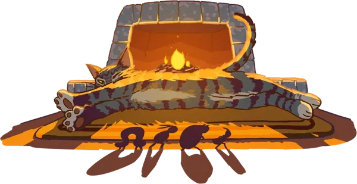
Streifzugbogen der Bande öffnen →
Titanen-Karten wie Vaesen: Bild nur, wo das Buch beim Eintrag eins hat (im Buch nur der Axolittle). Ohne Bild: Karte mit Kopf in Titanfarbe und den wichtigsten Werten. Gelb umrandet = Titan der Bande (aus dem Streifzugbogen). Klick → Titan-Detail.
Titanenbau: 9 Merkmale mit den Original-Brocken-Symbolen; gebaut = durchgezogen mit Ausbaustufen, sonst gestrichelt. Klick → Detail.